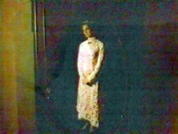
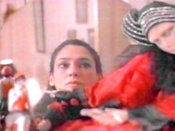
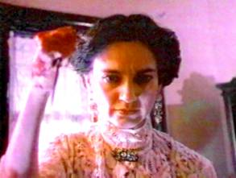
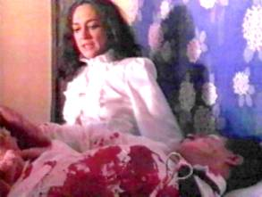
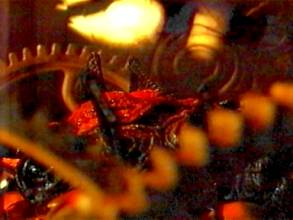
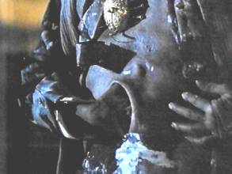
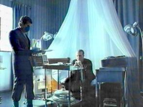

(click on icon for more information)
Between Dolls, Vampires, and Cyborgs: Recursive Bodies in Mexican Urban Cinema |
© Prof Geoffrey Kantaris , 1998
University of Cambridge
I approach the theme of vampires and the living dead in cinema with some trepidation, not only because it's the right time of year for them to be popping out of their coffins and peeping invisibly into our mirrors, but also because I know that this is a theme with a long history in cultures in which I have little expertise. So as to dispel any illusions from the outset, I am not going to say anything very new about the cultural and cinematic significance of Dracula, vampires, golems, and so on, but I am, hopefully, going to show you some of the exciting permutations which these take on in the cinematography of late twentieth-century Mexico, as part of an on-going study of the re-configurations of late-modern and postmodern urban culture in that haunted and distorting mirror which Europeans often see when they look at Latin America.
I am particularly fascinated by what happens when the late-modern themes of dolls, mannequins, vampires, and the undead, in the nightmare of the metropolis, encounter the postmodern theme of the cyborg or "cybernetic organism". Of course the staging, quite literally, of such an encounter is already prefigured in that quintessentially modernist cinematic text,Metropolisof 1926. Postmodern cyborgs, however, are more modular: the machine does not substitute for the organic as its nightmare, roboticized double; machine and organism are instead multiply interfaced in complex networks in whose entangled threads we can read, amongst many other things, dramatic stories about the technological production of nature, the conflictual implantation of global power-knowledge systems, the gendering of bodies within the reproductive and replicative scenarios of biotechnology, and the recursive materialization and de-materialization of bodies across the televisual information horizon. The theorist who has most deployed the cyborg figure in her work is of course Donna J. Haraway, and as will be obvious to most of you in the course of this paper, my own thinking about the relationship of the body to postmodern technologies is heavily indebted to her work, in particular her most recent book with the amazing titleModest_Witness@Second_Millenium.FemaleMan©_ Meets_OncoMouseT, as well as her earlier book that introduced the figure of the cyborg,Simians, Cyborgs, and Women: The Reinvention of Nature.
Cyborgs are no mere fantasy science-fiction images, although science fiction is often itself the best guide to popular anxieties about globalization, difference, and high technology. For examples of fully integrated, cute little cyborgs you need look no further than the popular television series for toddlers, theTeletubbies. Here's one I made earlier, and you'll note that it has a television screen firmly located in its stomach, and an aerial in place of antennae growing out of the head. What better way to prepare children for their future role as televisually mediated subjects, their bodies organically interfaced with the visual information economy? Eyes glued to the television screen, they receive a recursive image of a body reduced metonymically to television set through which the embodied life-stories of other children are in turn recursively mediated. Well, maybe you'll be relieved to know that good old Barbie is still as popular as ever. But I want to situate my paper somewhere between the gendered dolls of yesteryear and the hybridized cyborgs of today, with a few vampires thrown in the middle.
My title, then, refers to the spatio-temporal breach where dolls, vampires, and cyborgs can co-exist across the violently foreclosed historical narratives that might otherwise separate them. And one paradigmatic version of such a spatio-temporal breach might be Mexico City in the 1980s and 90s, one of the largest cities on earth, yet peripheral enough to be subject to the violent swings of speculative investment, its aggressive postmodernity cut through with the shattered fragments of a stalled modernity. Michael Watts cites the Catalan urban geographer Manuel Castells to the effect that "the internationalization of post-war capitalism has produced a lived experience in which 'the space of flows . supersede[s] the space of places'". He goes on to argue:
[Q1] one can productively situate [this] local-global conundrum on the wider canvas of the production of capitalist space [.]. Periods of accelerated change and reconfiguration within capitalism - the 'creative' [.] destruction of everything it cannot use - produce what geographers have referred to as space-time convergence [.]. The erosion [.] of the glorious age of post-war Fordism, and its displacement by some form of flexible [.] accumulation, represents in this context the most recent modulation in a recursive, wave-like pattern of space-time compressions. (Watts, 492).
Such space-time implosion, in a city heavy with the signs of the past, as is Mexico City, seems to short-circuit ordered temporal narratives, projecting them out onto its surface. At the best of times, cities in Latin America are beset by fevers of demolition and reconstruction, as new investment money tries to liquidate old assets and speculators awash with over-accumulated capital from US, European, or Japanese markets, attempt to realize higher profits by making quick investments in the Third World, which they are just as quick to withdraw at the slightest hint of trouble. This process is exacerbated, in the case of one of the films we shall be examining today, by the catastrophe of the earthquake which hit Mexico City on September 19th, 1985. The massive destruction to the urban infrastructure, let alone the huge loss of life, nevertheless becomes the occasion for a full-scale construction boom as capital takes advantage of a natural form of liquidation of over-accumulated stock. Donna Haraway makes a suggestive link to vampire mythology of this kind of creative destruction when she writes that "any expanding capitalist society [.] must continually destroy what it builds and feed off every being it perceives as natural-if its strategies of accumulation of wealth are to continue to push the envelope of catastrophe" (Modest_Witness, 214).
Yet such processes are not only economic. Many commentators, from our own Anthony Giddens to Brazil's Renato Ortiz have stressed that the culture industries of late modernity are constitutive rather than merely reflective of deterritorialization processes such as disembedding and time-space distanciation. In other words, culture itself, and audiovisual culture in particular - which forms one of the central reflexive institutions of late modernity - are complicit in the reordering of time and space which aligns the local with the global. This was certainly true of cinema in its heyday in Latin America, and we should not forget that Mexico's Golden Age of cinema in the 1940s and '50s was a mass, popular phenomenon. At the level of disembedding, its effects were twofold: on the one hand it helped in the consolidation of the post-revolutionary nation, disembedding the popular imagination from its enmeshing with the local community and re-inscribing it within the larger framework of a newly consolidating popular national consciousness; on the other hand, as an industry it was fundamentally tied into global circuits of symbolic exchange, highly influenced by Hollywood domination of the medium, and so prepared the ground for the full-scale deterritorializing onslaught of television. To what degree the same can be said of the cinema industry today, largely in crisis in Latin America, to a great extent depends on the market penetration of the films, but the fundamental point that cinema partakes of the very processes is responds to still remains.
Mexican commentators such as the social anthropologist Néstor García Canclini tend to focus more specifically on the local-global dialectic as it is enacted in the Mexican megapolis as a paradigm for Latin American urbanization and globalization. In the mega city, forms of local community can only exist in fragmented isolation from an unknowable, unnarratable, unmappable whole. The city's fabric is split and disseminated, through globally driven processes of territorial expansion and multiple waves of migration, into many splintered cities: the historic city, the industrial city, village cities, migrant cities, globalized information and finance cities. While the knowable community, to use Raymond Williams' term, is atomized, the dominant experience of fragmentation is compensated for, he argues, by the illusory audiovisual community of the mass media. So, what interests me here is the way in which we experience the dissemination of our bodies into a violently globalized and televisually mediated urban space, and the kinds of recombinatory strategies we develop to counter such fragmentation.
More central to our purposes, García Canclini qualifies the role of the culture industries in this re-articulation of the local and the global. He claims that these industries are implicated in thedualprocess of transnationalization, or deterritorialization, and the folkloric preservation of local culture through the fiction of national and supra-national difference. At the level of Latin America the marketing phenomenon of magic realism, from Gabriel García Márquez through Isabel Allende to Laura Esquivel, might be the name of one such reading-off of Latin American difference and heterogeneity, reified as a sanctuary of pre-modern nature preciselyforthe postmodern readership of a globalized and homogenizing cultural market (García Canclini, 94). At the level of the city, however, paradoxically less mappable than the broad brushstrokes of magic realist Latin America, the æsthetics of the modernistflâneuroften give way to those of the television advertisement and video clip, transcultural citation, and cultural hybridization.
If this seems to be leading us some way from mannequins, dolls, vampires and cyborgs, let's remember that the vampire as prototype of the modernist and postmodernist use of these figures encodes multiple fears about hybridization, racial-cum-sexual pollution, the corruption of virginal 'nature', and the transfusion of body into simulacrum - the latter being one of the reasons why the vampire has had such cinematic resonance. I cite as evidence of this, the French urban philosopher Henri Lefebvre's account of the emptying of body into image within the urbanization of capital:
[Q2] Living bodies, the bodies of 'users' - are caught up not only in the toils of parcellized space, but also in the web of what philosophers call 'analogons': images, signs and symbols. These bodies are transported out of themselves, transferred and emptied out, as it were, via the eyes: every kind of appeal, incitement and seduction is mobilized to tempt them with doubles of themselves in prettified, smiling and happy poses; and this campaign to void them succeeds exactly to the degree that the images proposed correspond to 'needs' that those same images have helped fashion. So it is that a massive influx of information, of messages, runs head on into an inverse flow constituted by the evacuation from the innermost body of all life and desire. (Lefebvre , 98) [This is exactly how I feel when I open my e-mail every morning]
However, before taking these ideas further in relation to the Mexican vampire movie, I want to return to the related, very modernist, theme of the doll and the mannequin, which in the temporal compressions of Mexico City can co-exist with postmodern cybernetics, and here, at last, in a moment, is my first clip.
The first film I want to look at isÍntimo terror("Intimate Terror" translated by the subtitlers as "Secret Fear"), directed by the Mexican poet Walter Doehner Pecanins, and based on a story by Armando Cuspinera. It was produced in 1990 but is set in 1987 in the aftermath of the great earthquake which shook Mexico City on September 19th, 1985. The film emerges from a sense of the social and physical collapse of the infrastructure of Mexican urban society, and includes in the credit sequence archive footage of the many collapsed buildings that killed so many thousands of people. The earthquake caused heavy damage in particular to multi-storey housing, which often collapsed like cardboard, burying dead, and alive some 20,000 people, including the Juárez hospital in which there were about 3,000 fatalities. As I mentioned, demolition and reconstruction of the urban environment became much more pronounced in the years following the earthquake, so that in this film, the sense of urban catastrophe, infused into the terrible nightmares which come to destroy a woman's life, is given a tangible image that appears to short-circuit the representational apparatus of cinema let alone the parallel and recursive representational apparatus of dreams.
The film concerns a young childless couple, Pablo and Luisa, who find a place to rent after being forced to live with Pablo's mother when their apartment was destroyed in the earthquake. Their lives are apparently tranquil - Luisa hopes to return to her writing, which she had stopped at the time of the earthquake, while Pablo goes off to work each day in local administration - but beneath this surface normality, a series of strange events and obsessions begin to emerge, centred on an antique wardrobe with its mirror, in which Luisa begins to witness a terrible crime from the past unfolding. In some ways the film takes the earthquake as a metaphor for the ceaseless repression of history within urban space, a process that is largely unplanned and uneven in Mexico City, and enacts a kind of psychic return of the dead. The clip below is from the beginning of the film, and shows the first meeting of the couple with the owner of the house which they want to rent. This is a compilation of clips which I've edited, the first showing (in black-and-white) some of the archive footage of the demolition work after the earthquake, then the opening scene showing the couple standing at the door - and note the rigidity of the camera mirroring the rigidity of their faces and dialogue, as if they were zombies acting out someone else's script. We then see their first look around the house, cutting to Luisa exploring upstairs where she comes across an old wardrobe with an oval mirror. You'll have to keep your eyes peeled here to see a very brief but startling double cross-cut as Luisa gets a glimpse of someotherreality or other time reflected in the mirror. I then cut the clip to a later sequence where Luisa, out walking through the derelict city, comes across the house of the sinister don Agustín, and is invited in.]
To view clips on this page you will need
 if it is not
already installed on your system
if it is not
already installed on your system
(click on icon for more information)
Íntimo terror - Clip 1
(Click on link above for pop-up version of clip or
use the controls below to view it directly on this page)
[CLIP 1] - Scenes of
devastation after earthquake - Pablo & Luisa knocking at door - Luisa's
exploration upstairs - Luisa walking through derelict streets - Choosing
dolls with Don Agustín 7m40s
See important Copyright statement regarding
clips at the end of this document.
Well, I hope you noticed at the beginning of the clip the tailors' dummy - just the torso with no arms or legs or head - in the entrance hall of the house, already figuring the substitution and displacement of bodies even before the theme of the doll is made explicit, condensing as it does motifs of doubling, engendering, sterility, surrogacy, and recursion. At the end of the clip, when Luisa is trying to choose one of the dolls which don Agustín has offered her, her head is framed by the mirror at the back of the exhibition case in such a way that an analogy is suggested between herself and the dolls as specular doubles. The doll that she chooses is dressed in similar clothes to a nightmare woman, double of herself perhaps, or murderess from the past, whom she will later glimpse in the mirror of her wardrobe.
|
 The ghostly woman appearing in the wardrobe mirror in Luisa's bedroom |
 Luisa's head framed and reflected in don Agustín's dolls' cabinet |
The figure of the doll, like the trope of the return of the dead, has a strong presence in Mexican and indeed Latin American literature, deriving from the huge influence of surrealism and modernist thought in general on writers such as Julio Cortázar and Carlos Fuentes, as well as from the hybridization of Christian and indigenous myth systems. Their use of such figures as paradigms of textual doubling, the doubling enacted within textual representation and in the case of Fuentes in the implantation of European symbolic and scriptural systems in Latin America, is more involved than in the films we're looking at here. However what I am conjecturing to be different about the way in which both films deploy these high modernist themes is in their placing of the doll/ zombie/ undead figure at the threshold of the failure of representation, as figures of a phase change, of the spatio-temporal boundary where representational logic phases into and out of an order of simulation. Or rather, both films project and encode the fears and desires generated in the superimposition of these states, although in somewhat different ways.
Íntimo terror, I take to be a film governed by a largely modernist sense of temporal compression, with the fears that it encodes centring on the entrapment of bodies in the time warps of the unevenly modernized city. Henri Lefebvre sees it as a defining characteristic ofmodernitythat the traces of time inscribed in natural space are made to "vanish" from the urban scene, are atomized, consumed, used up, and "spent". Present only as fragmented remains, flattened out onto the face of a clock, the shards of organic or cyclical time are swept away with the debris of the city, only to return through the gaps and fissures opened up in the earthquake, the devastation of the urban infrastructure in a cityscape now haunted by the absence of those buried beneath its rubble. Moreover, the motif of the doll draws out a gendered dimension to the way urban space is experienced and inhabited, as the film lays great emphasis on Luisa's crumbling sense of her own identity. Caught between the domestic chores her husband expects of her, her childlessness, and her failure to commence the novel which she is supposed to be writing - to compose any meaningful narrative projection of herself -, she becomes possessed by the story of jealousy and murderous revenge she sees unfolding in the mirror of her bedroom, while the breakdown of her own self-coherence mirrors the shattered urban environment through which she has to make her way every day to do the shopping. I think I'll show another clip now which highlights some of these ideas. The clip begins in the meat market, where Luisa is doing her shopping and comes face to face with the machine-like processing of death in the city as the carcasses of animals are being gruesomely prepared for consumption. I then cut to her next visit to don Agustín, where they talk about their experiences of the earthquake with frighteningly blank expressions. After a terrifying run through the derelict city, we see her at home, trying to write, and failing, with the doll on her desk, when she gets up to look in the mirror.
Íntimo terror - Clip 2
(Click on link above for pop-up version of clip or
use the controls below to view it directly on this page)
[CLIP 2] - Luisa in the meat market - Talking with Don Agustín about the earthquake - Running through derelict city - Failing to write at home 4m50s [Total: 12m30s]
Film figuring writing, and in particular failed, disturbed, or pathological writing, almost always does so as a citational image, a simulation of the breakdown of coherent narratives in the passage from representation to simulation. As an example, think of David Fincher's cult horror filmSeven(1995), where the murderer's pathological writings extend to millions of words, a whole library full of indecipherable jottings, which the New York police department will need weeks to sift through to find any meaningful clues. The text no longer signifies as a narrative capable of being deciphered, mirroring, in its bewildering excess, the breakdown of the detective story paradigm whereby the detective is supposed to be the master reader who sorts out all the dispersed narratives of the case. Returning toÍntimo terror, just as the city is inhabited by haunted voices, moanings, and groanings, as if the victims of the earthquake were still down there, buried alive, so Luisa's body is possessed by a narrative not of her own conscious choosing. The film builds up to a truly horrendous conclusion as Luisa slowly takes on the identity of, and is possessed by, her double. Don Agustín gives her more and more presents, each one an item of clothing or jewellery that will cause her to resemble ever more closely the woman in the mirror. In the mirror, she sees a man who looks like her husband arguing violently with the woman, and then sees her husband making love with a woman called Sirenia who lives in the neighbourhood. Believing that she is being pursued, she seeks refuge in don Agustín's house, where, to her horror, she finds the same Sirenia she had seen in the mirror. Suspecting that she is going to be murdered by don Agustín, she manages to give him the slip, and after a panic-stricken stumble through the ruined night-time streets, comes across a woman dressed exactly as herself apparently sleep-walking through the streets with a pair of scissors in her hand. Luisa runs into her house and upstairs to her bed. Suddenly the woman from the street, who is the woman in the mirror, opens the bedroom door, and, brandishing the scissors, plunges them towards the camera. Abruptly Luisa wakes up, to find herself in her nightdress in her bedroom, with her husband in bed next to her. She has blood on her hands. She tries to wake her husband, pulls off the sheets, to find him lying in a pool of blood, the pair of scissors buried in his chest [please see the stills provided on the handout].
|
 Luisa's double turns nasty |
 The "end" of the nightmare |
Well, I will resist interpreting the conjunction - which could come straight out of a textbook on psychoanalytical film theory - of writing, a mirror, and a pair of scissors in this film, because such conjunctions are almost a cliché of Mexican literature thanks to Carlos Fuentes. I think the film is doing something else - as if this ending were not horrendous enough, the scene now cuts to a couple standing in front of the door of the house, knocking on the door, newspaper in hand. The door is opened by don Agustín who tells this new couple that they are too late to rent the house because he has found a buyer. They persuade him to let them look around, and so the story is repeated as a new couple comes to take the place of Pablo and Luisa. In a sense the film begins again, with new actors saying the same lines. In an album lying open on don Agustín's coffee table we see a photograph of Luisa and Pablo, alongside photographs of many other couples. The recursive bodies in the recursive narrative of this film end up as so many celluloid simulations.
[Q3] the vampire: the one who pollutes lineages on the wedding night; the one who effects category transformations by illegitimate passages of substance; the one who drinks and infuses blood in a paradigmatic act of infecting whatever poses as pure; [.] the one who is undead, unnatural, and perversely incorruptible. [.] For better of for worse, vampires are vectors of category transformation in a racialized, historical, national unconscious (Haraway, "Race. Universal Donors in a Vampire Culture: It's All in the Family", 216).
I now move on to my second horror film,Cronos, a postmodern urban vampire movie with a twist, whose title indicates a similar obsession with time, but whose narrative simulates much more so thanÍntimo terror, the violent compression of the archaic, the modern, and the hyper- or post-modern. In this film of 1992 by the young Guadalajaran director Guillermo del Toro, the vampire co-exists with the cyborg in a spatial dimension simultaneously infused with time and bereft of temporal difference, as, once more, representational space dissolves into simulation. The film was designed from the outset for a globalized audience, being co-produced by Iguana Productions and Los Ángeles-based Ventana Films, containing a mixture of Spanish and English, and using an international cast of Argentine Federico Luppi, Hollywood actor Ron Perlman, as well as Mexican actors of course. As Ann Marie Stock argues, "Neither del Toro norCronosis 'obsessed' with authentic national culture. In fact, they flaunt their migrancy and hybridity" (xxvi). Yet the film also seems to encode, or at least play with, the anxiety produced in the pollution of frontiers. This, then, is an important example of the way in which post-national visual culture both reflects and partakes of disembedding processes.
So straight into the first clip, which is self-explanatory because it is from the opening of the film - this is a bit of a shocker:< /span>
Cronos - Clip 3
(Click on link above for pop-up version of clip or
use the controls below to view it directly on this page)
[CLIP 3] - Credit sequence (city streets) - Jesús and Aurora discover Chronos Device - Jesús tries it out 4m0s [Total: 16m35s]
Well, as you see, the film concerns an Argentine antiques dealer in Mexico City called Jesús Gris, played by the Argentine actor Federico Luppi, who accidentally injects himself with the Chronos Device. This clockwork machine, we are told in a pre-credit sequence, was invented round about 1536 by the alchemist Humberto Fulcanelli, chief watch-maker of the viceroy of New Spain, as Mexico was known in Colonial times, who also wrote a book detailing the strict rules that have to be followed in the use of the device. As we saw at the beginning of the film, Jesús's house stands out from the modern buildings around it, or is rather dwarfed by them, an incongruous bit of the past in a Mexico city of fast traffic, multi-lingual signposts, and the litter of Christmas shopping strewn on chaotic streets, overlain in a typical piece of postmodern pastiche, with an Argentine tango. Both films' obsession with antiques, with fragments of broken stories from the past welling up through them, is coupled with a bewildering setting of uneven and unplanned urban development that leaves shards of time lying around the city's broken fabric.
But the Chronos device is not just a machine: at its very core, in amongst its intricate mechanical cogs, lies a blood-sucking insect as we'll see later, a sort of bio-filter, that confers eternal life on the person injected by it. [See stills on handout]
Mechanical vampire: the Chronos Device in action |
 Techno-organic kinship: inside the Chronos Device |
However, like any drug, it has to be used regularly and in increasing doses, and creates in the person who uses it an irresistible craving for ever larger quantities of human blood. In short, Jesús Gris, respectable upright grandfather, finds himself transformed, by stages, into an intravenous drug user, then a haemophiliac, until finally, his body mutating slowly into that of a monstrous insect, he becomes a simulated postmodern vampire. I say simulated because, as you will have gathered from the way I describe this transformation, the film quotes just about every classic horror movie and Hollywood body ripper that it's possible to fit into a single film, from Hitchcock'sRear Windowto Cronenberg's re-make ofThe Fly, fromNosferatutoVideodrome. For a particularly stunning example of this visual quotation, please see the stills on the handout.
Example of filmic citation: James Woods gets his hand under the skin in David Cronenberg'sVideodrome(Canada, 1983). Note the symmetry of the positioning of torso and hands in the still fromCronos(right) that appears to be quoting this scene. |
 Multiple citation: the giant Fly/Alien/Vampire thing inCronos |
A machine part mechanism part organism, with a body of sorts plugged into its whirling shafts and gears, already evokes in a frightening temporal rift, a pre-modern prototype cyborg adrift in a completely irresolvable postmodern timeframe. The Chronos device seems to telescope narratives as apparently distinct as colonization (it is invented at the dawn of the Spanish Empire in the Americas), AIDS hysteria (Jesús Gris's body decomposes the more he uses the device), the earliest forms of mechanization (the invention of clocks which enabled synchronization over large distances), techno-organic kinship (a kind of super dialysis machine), and biotechnology and genetic engineering (Jesús's body mutates into that of an insect). If I insist on the biomedical paradigm, it is because it is heavily signalled in the film. Jesús, it emerges, is not the only one to know about the existence of the Chronos device. A dying capitalist millionaire, owner, it is implied, of huge industrial wealth, who has had most of his bodily organs surgically removed due to slow-spreading cancer, has found the old alchemist's book, and sends his nephew, Ángel de la Guardia, searching around Mexico City for angels of the type you saw the Chronos device hidden in during that clip, since he wants to use the device to cure himself of his incurable disease. In this next clip, we see the industrial warehouse at the top of which the old Señor Dieter de la Guardia lives in a hermetically sealed high-tech environment. Note here the film's bilingualism, since the nephew Ángel, prefers to speak English, evocative of a postmodern, transculturally hybridized space:< /span>
Cronos - Clip 4
(Click on link above for pop-up version of clip or
use the controls below to view it directly on this page)
[CLIP 4] - Empresas de la Guardia (warehouse) - Ángel goes to visit old man in sealed medical environment 2m10s [Total: 18m45s]
You saw there the X-rays on the walls, and the dozens upon dozens of replica angels, all covered in polythene dust bags. Cocooned in this high-tech medical bubble at the heart of an industrial warehouse which is frankly allegorical in its figuring of different layers of industrial manufacture, linguistic hybridity, interlaced with religious iconography, the dying Señor de la Guardia is clearly a cyborg composite, dependent upon biomedical technology to keep himself alive, and as such he is the post-modern double of the insect cocooned inside the pre-modern Chronos device.
Allegories of modernity: de la Guardia's industrial warehouse |
 Dieter de la Guardia (Claudio Brook) in his high-tech medical "bubble" at the top of the warehouse |
One might say something similar about the condensed narratives at work here to what Haraway says about the Lynn Randolph picture,Transfusions, which I have put on the front of your handout:
Randolph uses the vampire-cyborg mythology to interrogate the undead psychoanalytic, spiritual, and mundane zones where bio-medecine, information technology, and the techno-organic stories of kinship converge. This is the kinship exchange system in which gender, race, and species-animal and machine-are all at stake. Joining the pulsing fluids of blood and data,Transfusionsguides us through the interrogation of universal donors. (Haraway, "Race. Universal Donors.", 216-17)
Note that the vampire in this film is not so much Jesús Gris, or even Señor de la Guardia, as the hybrid machine-organism itself. In a moving passage of Nina Auerbach's fantastic compendium of vampire mythology,Our Vampires, Ourselves, its title of course citing the "our bodies, ourselves" logo, she examines the sick vampires of postmodern culture with some nostalgia, seeing them as an endangered species:
[Q4] In Hambly'sThose Who Hunt the Night, London's vampires are being murdered en masse: an amateur detective must save them from the manufactured vampire who feeds on them. In a culture turning from humanism to computers and cyborgs, in which authentic transcendence is associated not with nature or bodies, but with "a cybernetic organism, a hybrid of machine and organism, a creature of social reality as well as a creature of fiction," even uninfected vampires are debilitated because trapped in outmoded organicism. Originally unnatural, vampires as a species are now abandoned in a nature withering before fabricated cybernetic brains. (Auerbach, 177)
Although representational culture, the culture of the Book, is still present inCronos, in the form of the ancient alchemist's manuscript, it is peculiarly redundant as its apparently strict rules are never followed, or never seem to matter, while the old Señor de la Guardia ends up eating its pages: "Best meal I've had in years", he says in English to a resuscitated Jesús whose flesh he peels off like so many layers of decayed cosmetics in a clip we'll see in a moment.
To summarize the argument I've been putting forward in this paper: I have tried to identify in these two films an attempt to capture, in very different ways, the spatio-temporal rifts experienced in the megapolis. Although it is a partial, compressed and contradictory process, both films appear to be tracing out the spatio-temporal boundaries where the twin logic of representation and production phases into and out of a recursive order of simulation and replication.
So, I am going to end now with a compendium of clips fromCronos, some of them a little bit gruesome, and I'd be very interested to know how many trans-cinematic citations you can locate in these clips, because the simulated cyborg-vampires, the recursive bodies within bodies, of this film are in my view quite clearly part of a postmodern pastiche, as is the film's narrative itself, with its allusions to a transcendental morality play (the names of the characters - Jesus, Angel, Aurora), Hollywood rooftop chases amidst the neon signs of the postmodern city (Blade Runneris somewhere there), and a belated almost comic appeal to humanism at the end when Jesús crushes the Chronos device with a rock, so condemning himself with some relief to mortality. So here are the clips:
Cronos - Clip 5
(Click on link above for pop-up version of clip or
use the controls below to view it directly on this page)
[CLIP 5] - Jesús's itch (Rear Window) - Jesús re-injects himself - The nose-bleed - Peeling off skin (The Fly) - The Resurrection (Videodrome) [7m40s] [Total: 26m25s]
5,166 words
© Prof Geoffrey Kantaris
University of Cambridge
November 1998< /span>
The filmsÍntimo
terrorandCronoswere shown on UK Channel 4 Television.
The clips in this document are reproduced under the University of
Cambridge's AVR Copyright Licensing Agreement for academic purposes only.
Works Cited
Auerbach, Nina.Our Vampires, Ourselves. Chicago: University of Chicago Press, 1995.
Barnes, Trevor, and Derek Gregory, eds.Reading Human Geography: The Poetics and Politics of Inquiry. London: Arnold, 1997.
Doehner Pecanins, Walter. Íntimo terror [Film]. México, 1990. Colour/35mm.
Fuss, Diana, ed.Inside/Out: Lesbian Theories, Gay Theories. New York and London: Routledge, 1991.
García Canclini, Néstor.Consumidores y ciudadanos: conflictos multiculturales de la globalización. México: Grijalbo, 1995.
Giddens, Anthony.Modernity and Self-Identity: Self and Society in the Late Modern Age. Cambridge: Polity Press, 1991.
Hanson, Ellis. "Undead". In Fuss,Inside/Out, 324-40.
Haraway, Donna J. "Race. Universal Donors in a Vampire Culture: It's All in the Family. Biological Kinship Categories in the Twentieth-Century United States". InModest_Witness, 213-65.
Haraway, Donna J.Modest_Witness@Second_Millenium.FemaleMan©_Meets_OncoMouseT: Feminism and Technoscience. New York and London: Routledge, 1997.
Haraway, Donna J.Simians, Cyborgs, and Women: The Reinvention of Nature. London: Free Association Books, 1991.
Haraway, Donna. "A Cyborg Manifesto: Science, Technology, and Socialist-Feminism in the Late Twentieth Century". InSimians, Cyborgs, and Women, 149-81.
Lefebvre, Henri.La Production de l'espace. Paris: Anthropos, 1974.
Lefebvre, Henri.The Production of Space. Trans. Donald Nicholson-Smith. Oxford and Cambridge, MA: Blackwell, 1991 (1974).
Ortiz, Renato.Otro territorio: ensayos sobre el mundo contemporáneo. Trans. Ada Solari. 2ª ed. Bogotá: Convenio Andrés Bello, 1996; rpt 1998.
Stock, Ann Marie, "Through Other Worlds and Other Times: Critical Praxis and Latin American Cinema". In Ann Marie Stock,Framing Latin American Cinema, xxi-xxxv.
Stock, Ann Marie, ed.Framing Latin American Cinema: Contemporary Critical Perspectives. Hispanic issues # 15. Minneapolis: University of Minnesota Press, 1997.
Toro, Guillermo del.Cronos[Film]. México: Instituto mexicano de cinematografía/Ventana Films/Producciones Iguana, 1991. Colour/35mm/91mins.
Watts, Michael J. "Mapping Meaning, Denoting Difference, Imagining Identity: Dialectical Images and Postmodern Geographies". In Barnes and Gregory,Reading Human Geography, 489-502.